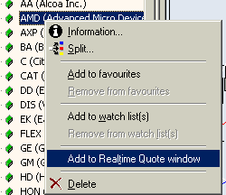
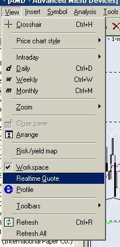
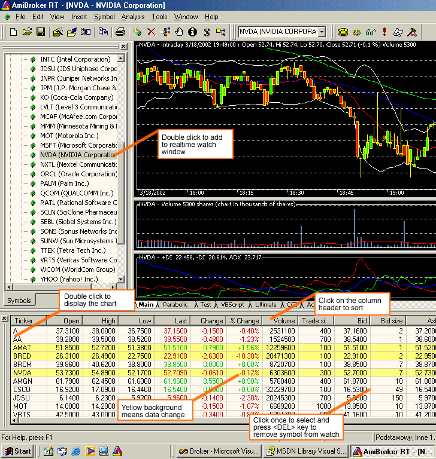
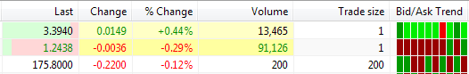
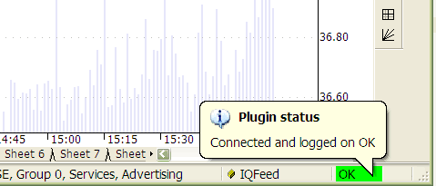
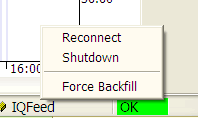
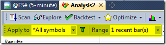
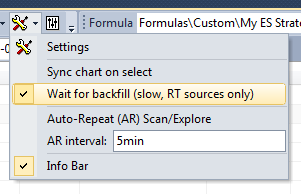

Now you can add symbols to your database. To do so, please go to Symbol->New menu. In the 'add symbol' dialog, enter one or more tickers (comma-separated) you wish to add to your database. If you want to see the chart for a newly added symbol, just select it from the Symbol tree in the workspace window. Please allow a few seconds (depending on the speed of your Internet connection) to backfill historical data.
You may add more tickers than your RT account allows. AmiBroker will automatically switch/update/refresh symbols, so the most recently used symbols are active and older ones are automatically removed from the Data Manager. Doing so, however, may lead to some problems if you exceed your subscription limits significantly. So it is advisable to use this feature responsibly and not expect to get 500 symbols when your subscription is limited to only 50.
Note that the above mechanism does not apply to the Real-Time Quote window, and it cannot hold more symbols than your subscription limit.
|
AmiBroker RT features a real-time watch window, which allows you to watch streaming quotes. To show this window, choose the Window->Realtime Quote menu option. (see image to the right ---->)  To add symbols to the Real-Time Quote window, you either double-click on the symbol tree or use the right-mouse-button menu's 'Add to Real-Time Quote' option, as shown in the picture above.
|
 |
The RT Quote window provides real-time streaming quotes and some basic fundamental data. It is fairly easy to operate, as shown in the picture below:

You can also display a context menu by pressing the right mouse button over the RT Quote window.
The context menu allows you to access the following options:

Version 5.90 adds Bid/Ask trend - a graphical indicator showing the direction of the 10 most recent changes in real-time bid/ask prices. The right-most box is the most recent, and as new bid/ask quotes arrive, they are shifted to the left. Color coding is as follows:
If bid/ask prices don't change, there is no new box. NOTE: This column works only if real-time quotes are streaming (markets are open).
If your data source supports mixed EOD/intraday mode (such as eSignal or IQFeed), you can use a single database for both types of charts.
However, if your data source does not support mixed EOD/intraday mode, and if you want to have long daily histories AND intraday charts, you should consider running two instances of AmiBroker: one for EOD charts and a second for intraday charting. Both may use the same real-time data source.
The data plugin connection status is displayed in the plugin status display area, located in the lower-right part of the AmiBroker main window, as shown in the picture below. When the connection status changes, AmiBroker plays a beep sound and pops up a bubble tooltip to inform about the status change.

The bubble tooltip provides more detailed information text and disappears automatically after two seconds.
If you want to re-display it, just hover your mouse over the plugin status display area.
To enable quick examination of connection status, AmiBroker displays color-coded information:
Using plugin context menu
Real-time plugins provide some additional controls via the plugin context menu. This context menu is available when you click with the right mouse button over the plugin status display area. If you do, a menu like this will be displayed:

Please note that various plugins offer various options in this menu; however, most plugins provide at least three basic and useful options:
Things you should NOT do, or you should do very carefully
You should note the fact that when you are using a data plugin, then the plugin controls the quotation database (see the Understanding Database Concepts article); therefore, you should NOT import quotes from ASCII files (this includes AmiQuote) for symbols that are already present in the real-time database.
If you do, the plugin will eventually overwrite your imports with the real-time data, or your database will become corrupted (if you import end-of-day data over an intraday database).
So please do not import ASCII (especially EOD data) into a real-time intraday database fed by the plugin.
You may ask why this is not disabled at all. The answer is that sometimes it is useful, and sometimes it will work (but these are rare cases). For example, it will work if you import INTRADAY data into the intraday database fed by the QuoteTracker plugin, and both the database and imported data have exactly the same bar interval.
It also works if you import the data for symbols that are not present in the database. In this case, newly imported symbols are marked by the ASCII importer as "use only local database for this symbol" (See the Information Window for details), so they are excluded from the real-time update. This is useful if you want to import some other data (even non-quote data) and access it via the Foreign function while using your real-time database.
So ASCII import is not disabled in a real-time database, but you have to use it with extreme care and know what you are doing.
The second thing is using Quote Editor. Although data is controlled by the plugin, it is in most cases possible to use Quote Editor. However, please note that you will be able to edit only one-minute data or a higher interval, and you will only be able to edit symbols that are backfilled completely (there is no running backfill for that particular symbol), and you will not be able to edit the last three bars. This is so because the last three bars are cached in the plugin. So, you will be able to edit them only when new bars arrive, making them 'older' than the last three.
The users of eSignal, myTrack, and IQFeed real-time plugins may now check the "wait for backfill" box in the Automatic Analysis window, and all scans, explorations, and backfills will wait for completion of the backfill process for a given symbol. This flag has no effect on databases that do not use plugins (external data sources) or use end-of-day plugins (like FastTrack, QP2, TC2000/TCNet, etc.). This flag also has no effect when using the QT plugin because QuoteTracker manages backfills by itself and does not provide any control over the backfill process to third-party applications.
BACKFILLING ALL SYMBOLS AT ONCE
To backfill all symbols at once in a data source that supports the "Wait for backfill" feature (IQFeed, eSignal), one can use the Analysis window. The procedure is as follows:
1. Open Formula Editor and type a simple single-line rule, as shown below, and choose Tools->Send to Analysis
Buy = 1;
2. In the Analysis window, select Apply to: *All symbols and Range: one recent bar

and turn on the Wait for backfill option.

3. Press the Scan button.
The Analysis window will iterate through all symbols, requesting a backfill for each symbol and waiting until the data arrives; so, at the end of the scan, all symbols will be backfilled.